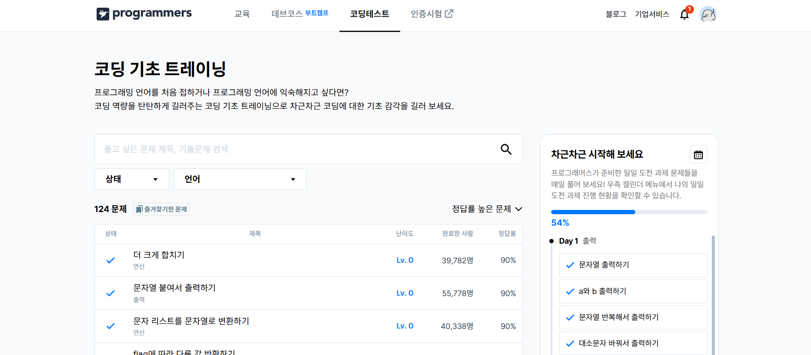
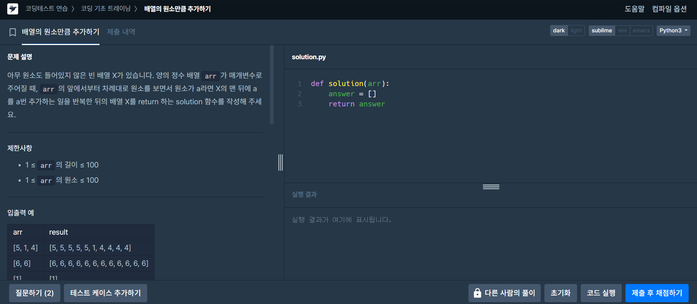
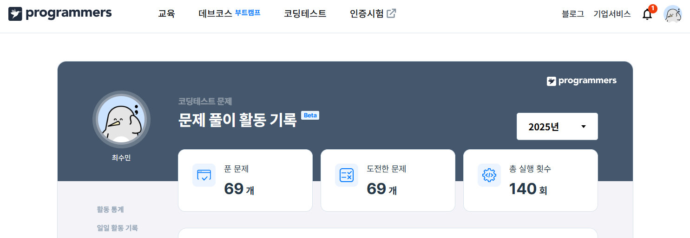

Programmers 공식 홈페이지
Programmers 문제풀이 도전
문제풀이 캡쳐 이미지:
  문제풀이를 하면서 느낀 점
Programmers는 개발자를 위한 코딩 테스트 플랫폼으로 기업 채용에 필요한 코딩 역량을 평가하거나 개인의 알고리즘 실력을 향상시키기 위한 문제 풀이 서비스를 제공합니다. 다양한 언어로 문제를 풀 수 있으며 풀이 결과를 다른 사람들과 비교할 수 있어 학습에 매우 유용합니다. 저는 Programmers에서 파이썬으로 다양한 문제를 풀어보며 문법들과 구조에 대한 이해가 깊어졌습니다. 특히 다른 사람들과의 코드를 비교함으로써 생각의 폭이 넓어진 것 같습니다. 앞으로도 꾸준히 문제를 풀어보며 실력을 향상시키고 싶습니다.